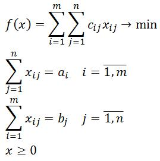

|  |
Имеется m поставщиков однородной продукции: A1, A2, ..., Am; и n потребителей этой продукции: B1, B2, ..., Bn. Так же известны цены перевозки единицы продукции от каждого поставщика каждому потребителю: Cij, i = 1,m, j = 1,n. Необходимо найти такие объемы перевозок Xij, i = 1,m, j = 1,n, чтобы их стоимость была минимальна, все потребности были удовлетворены, и вся продукция была вывезена. Различают закрытую и открытую транспортные задачи. В закрытой транспортной задаче количество продукции у поставщиков равно потребностям потребителей. Открытая транспортная задача приводится к закрытой введением фиктивного поставщика или потребителя. Транспортная задача является задачей линейного программирования специального вида, ее формулировку можно увидеть слева от данного текста. |
| Количество поставщиков, m = | ||
| Количество потребителей, n = | ||
|
|
||